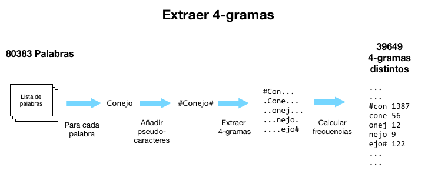

¿Cómo funciona?
NaiveWord usa un modelo probabilístico basado en frecuencias de grupos de cuatro letras.
Un idioma como conjunto de n-gramas
Un idioma puede describirse por la frecuencia con la que aparecen combinaciones de letras. Por ejemplo, «ción» es habitual en español y «thou» en inglés. Estas frecuencias permiten reconocer palabras reales e inventar otras que parecen pertenecer a un idioma.
Extracción de 4-gramas
Partimos de listas públicas de palabras para cada idioma. De cada palabra se extraen todas las secuencias de cuatro caracteres, incluidos marcadores para el principio y el final de palabra, y se cuenta su frecuencia.

Generación de palabras
El generador empieza con un prefijo y añade una letra cada vez. Para decidir la siguiente letra elige, de forma ponderada por frecuencia, un 4-grama que coincida con las tres últimas letras. El proceso termina al llegar al final de la palabra.
Limitaciones
El modelo no entiende el significado ni la gramática. Puede generar palabras demasiado largas o combinaciones de acentos poco naturales, y las listas de palabras no contienen todas las formas posibles.